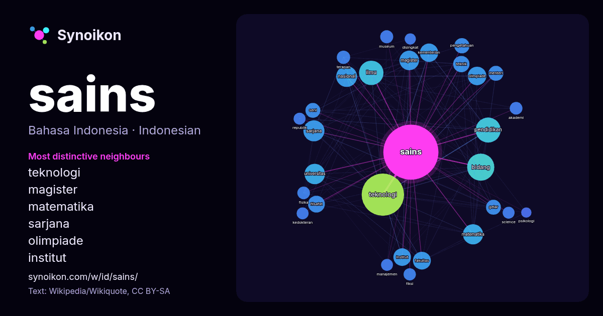

Bahasa Indonesia · kata populer
sains
“science” · Kata-kata di sekitarnya dalam 888 kemunculan dari Wikipedia, Wikiquote.

Tetangga paling khas
- teknologi 85×
- magister 39×
- matematika 36×
- sarjana 36×
- olimpiade 30×
- institut 28×
- ilmu 28×
- bidang 28×
- filsafat 26×
- kementerian 26×
- fakultas 22×
- terapan 20×
- pendidikan 19×
- universitas 18×
- pengetahuan 16×
- science 16×
- fisika 15×
- teknik 15×
- fiksi 15×
- nasional 14×
× = berapa kali lebih sering daripada di teks Wikipedia umum.
Tetangga paling sering
- teknologi 202
- bidang 83
- pendidikan 71
- ilmu 67
- sarjana 50
- nasional 49
- universitas 47
- matematika 46
- magister 43
- indonesia 41
- olimpiade 39
- kementerian 38
- fakultas 36
- institut 35
- bahasa 32
- filsafat 32
- teknik 30
- pengetahuan 26
- gelar 25
- menteri 25
Dalam konteks
- Ilmu atau sains adalah suatu disiplin sistematis yang membangun dan menata pengetahuan dalam bentuk hipotesis dan prediksi yang dapat diuji mengenai alam Wikipedia snippets · Ilmu
- Kementerian Pendidikan Tinggi, Sains, dan Teknologi Republik Indonesia (disingkat Kemdiktisaintek RI) adalah kementerian yang bertugas menyelenggarakan Wikipedia snippets · Kementerian Pendidikan Tinggi, Sains, dan Teknologi Republik Indonesia
- Olimpiade Sains Nasional (OSN), sempat diubah namanya menjadi Kompetisi Sains Nasional (KSN), merupakan ajang kompetisi tahunan dalam bidang sains bagi para Wikipedia snippets · Olimpiade Sains Nasional Indonesia
- sebagai sejarah filologi) Dari abad ke-18 sampai akhir abad ke-20, sejarah sains, khususnya ilmu fisika dan biologi, sering disajikan dalam narasi progresif Wikipedia snippets · Sejarah ilmu
- matematika dan penggunaan komputer untuk menyelesaikan masalah-masalah sains. Istilah informatika sepadan dengan istilah dalam bahasa Inggris informatics Wikipedia snippets · Informatika
- Negeri 8 Yogyakarta pada tahun 1988. Setelah itu, ia meraih gelar Magister Sains dari Universitas Indonesia pada tahun 2005. Listyo adalah lulusan Akademi Wikipedia snippets · Listyo Sigit Prabowo
- lain adalah PTIK (2003), dan SESPIMTI (2018). Ia meraih gelar Magister Sains dari S2 Kajian Ilmu Kepolisian Universitas Indonesia pada 2010. "Presiden Wikipedia snippets · Suyudi Ario Seto
- Pusat Sains Copernicus (bahasa Polandia: Centrum Nauki Kopernik, bahasa Inggris: Copernicus Science Centre) adalah sebuah museum sains yang terletak di Wikipedia snippets · Pusat Sains Copernicus
Kata lainnya
- air
- anjing
- bahasa
- emas
- iklim
- jantung
- jembatan
- kebenaran
- kehidupan
- kekuasaan
- keluarga
- kematian
- kereta
- kerja
- kesehatan
- kesenian
- kucing
- lingkungan
- makanan
- sejarah
- tuhan
- uang
Dihitung sebelumnya pada 2026-10-09 dengan pengaturan bawaan (±5 kata, korpus sedang). Peta interaktif dapat memperbaruinya dengan data langsung.
Antarmuka diterjemahkan mesin; koreksi dipersilakan.